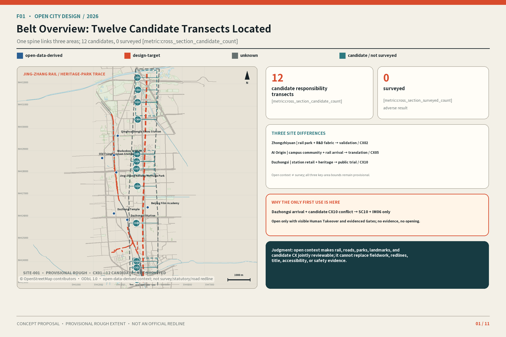
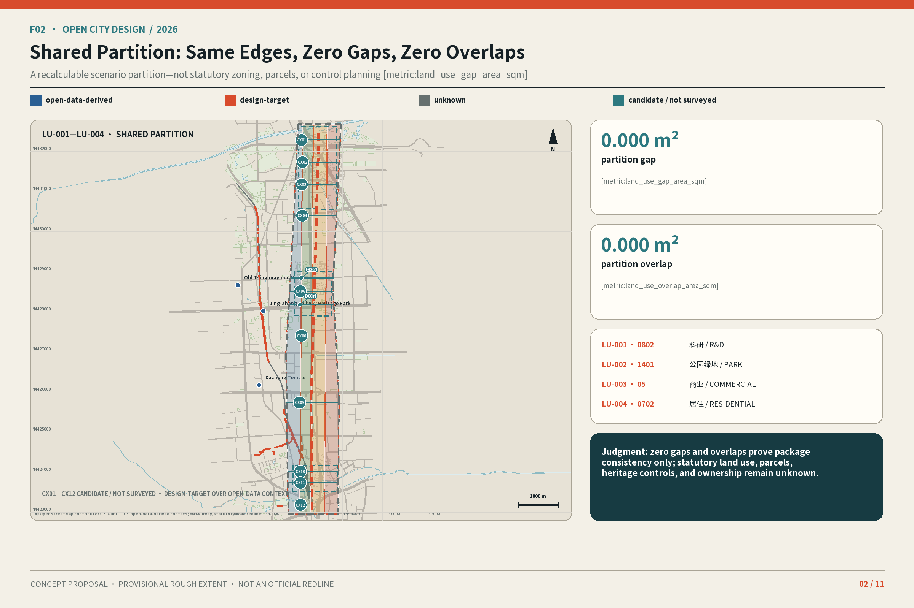
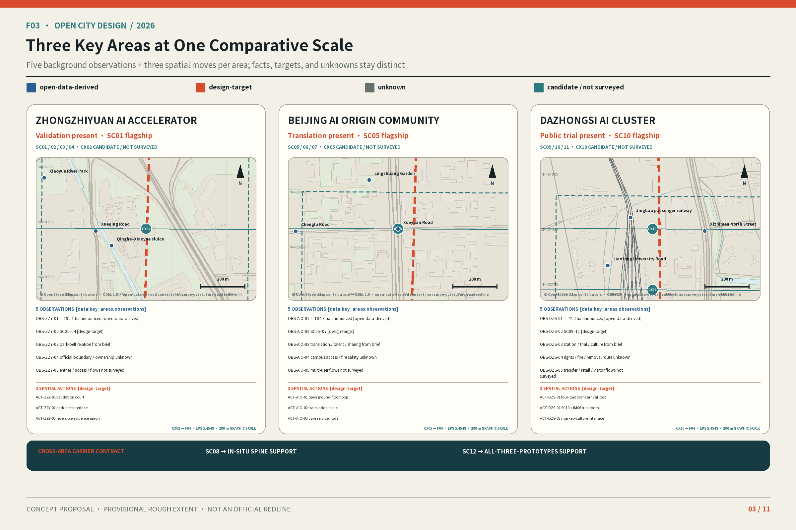
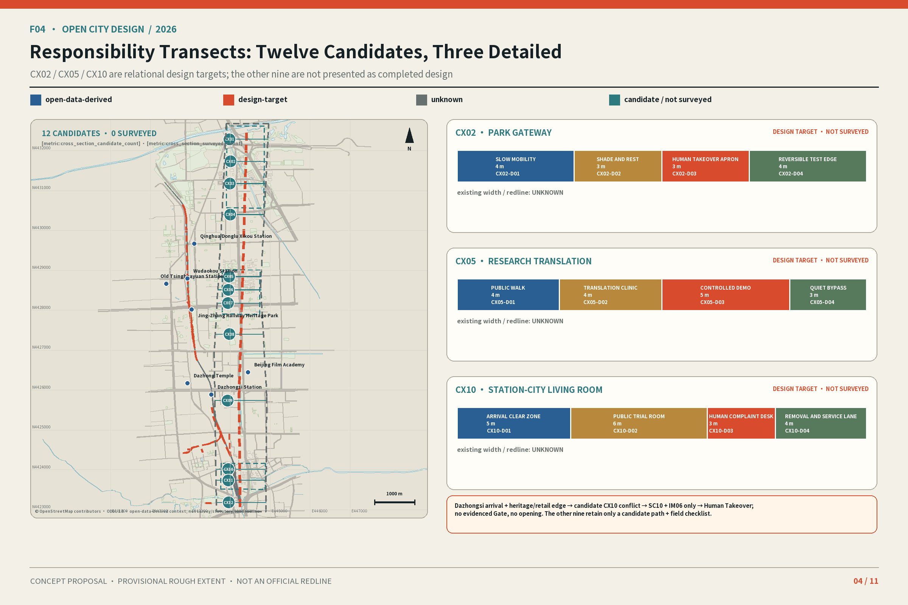
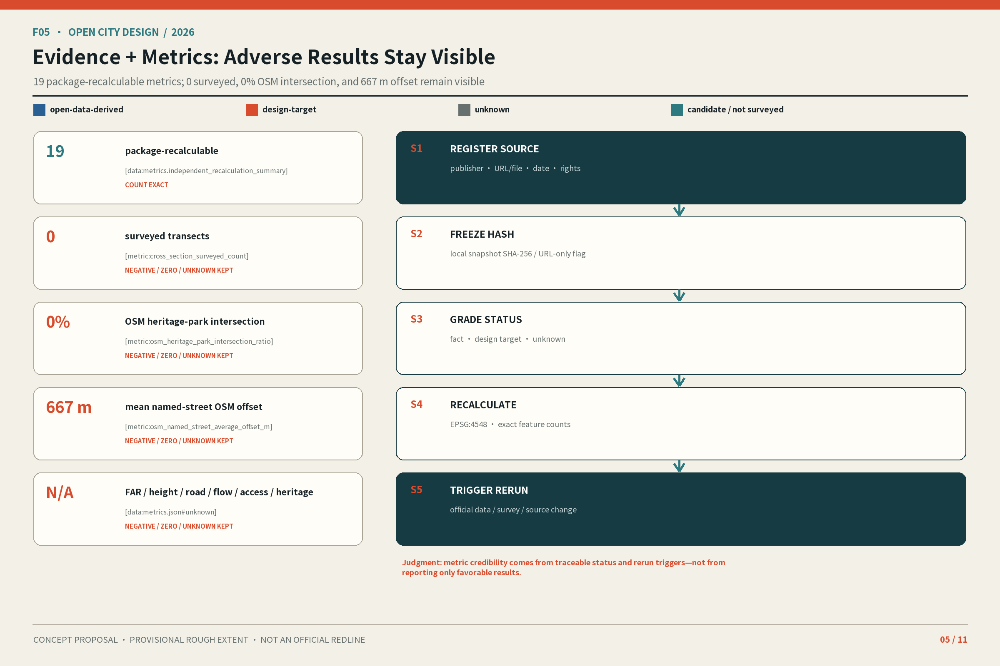
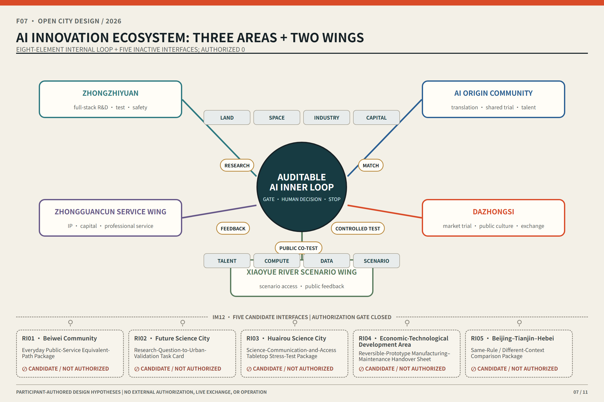
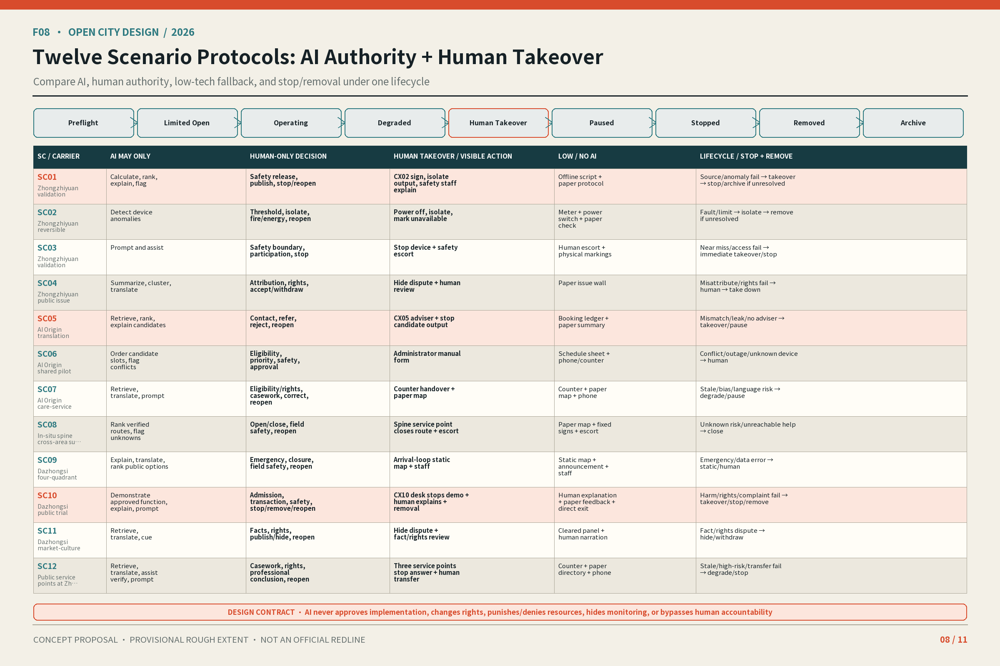
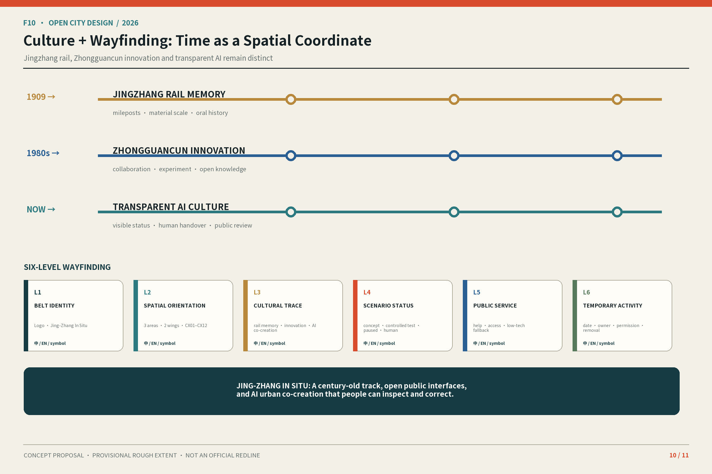
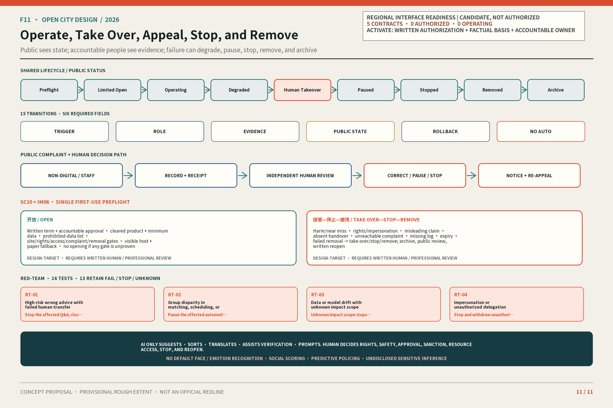

Still unknown / provisional
FAR, building height, road area, footfall, accessible pass rate, and heritage-control area; three provisional key areas; twelve controller unknowns.
Making AI Visible, Human-Takeover-Ready, Verifiable, and Withdrawable
Review route: 30 seconds on F01→F03→F08→F11; three minutes on space, scenario, human gate, and exit along the same route; fifteen minutes on all eleven boards plus T01–T07, ten claims, six agents, and 31 anchors. F01–F05 share one GeoJSON, metrics, and Phase 2 generator source. CX01–CX12 are candidate / not surveyed; only CX02, CX05, and CX10 carry relational design targets. Provisional and scenario layers never masquerade as fieldwork, mapping, or statutory plans.
One thesis | four primary messages | 10/10 claims | 3 flagships + 9 supports | 7 packages covering IM01–IM13 | 6/6 agents | 31/31 required outputs. The overview map, three scopes, key areas, land use, mobility, blue-green public space, buildings, renewal projects, AI scenarios, core metrics, sources, and assumptions remain visible; exact traceability lives in compliance_matrix.json.
The Jing-Zhang railway / heritage-park trace, real roads, parks, stations, and cleared landmarks distinguish three sites: rail park + R&D fabric at Zhongzhiyuan; campus community + rail arrival at AI Origin; station retail + heritage at Dazhongsi. Every background feature is open-data-derived, never survey, redline, parcel, or statutory control.
Only first use: Dazhongsi station arrival and its heritage/retail edge create the candidate CX10 conflict, so test SC10 + IM06 only. Human Takeover must stay visible; no evidenced Gate, no opening. Open context remains in manifest-declared evidence data and never enters required design GeoJSON.
Thesis · People, evidence, and responsibility present make AI visible, takeover-ready, verifiable, and withdrawable.
Site → sole first use · Jing-Zhang rail / heritage-park trace + real roads/parks/landmarks → Dazhongsi station and heritage/retail edge → candidate CX10 conflict → SC10 + IM06 only → Human Takeover; no evidenced Gate, no opening.
© OpenStreetMap contributors · ODbL 1.0 · open-data-derived context; not survey/statutory/road redline.
FAR, building height, road area, footfall, accessible pass rate, and heritage-control area; three provisional key areas; twelve controller unknowns.
Legal review, accessibility audit, safety certification, site survey, operator appointment, and official approval.
desktop review only; 0 official project GIS/CAD files
design-target area per linear metre for CX02 / CX05 / CX10; length and total cost unknown
12/12 controllers unknown; operator and all professional signatures incomplete
adverse / zero / unknown retained; 0 field or live-operation drills
NO-GO: no opening while any Gate is unproven.

In-figure source + limits: © OpenStreetMap contributors · ODbL 1.0; open-data-derived context, not survey, statutory control, or road redline. SITE-001 and CX01–12 remain provisional / candidate.










SITE and KEY_AREA are provisional_rough. Recalculate layers, metrics, boards and PDFs when official polygons arrive.
FAR, height, road redlines, ownership, utilities, flows, parking, heritage controls and engineering feasibility remain unfilled.